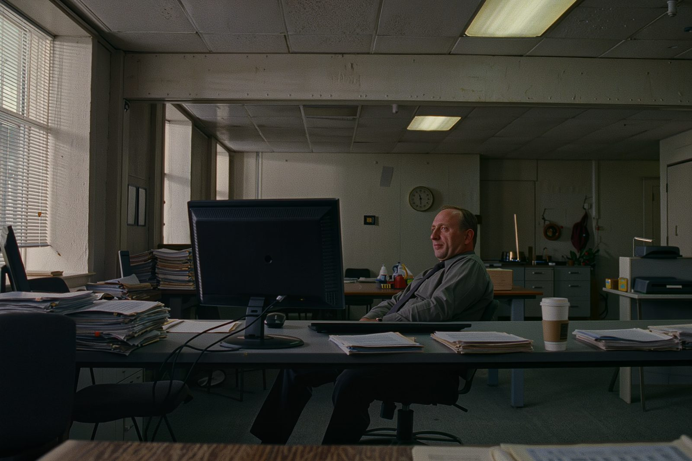
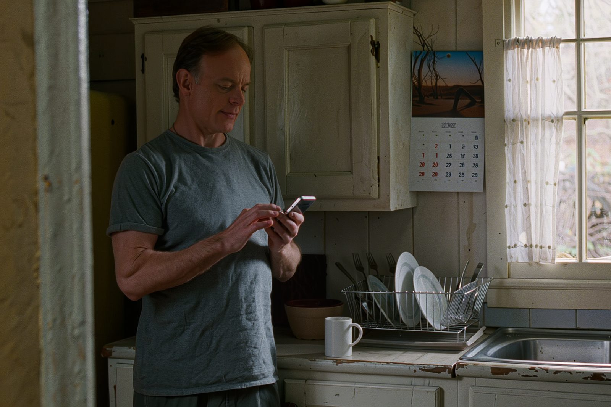
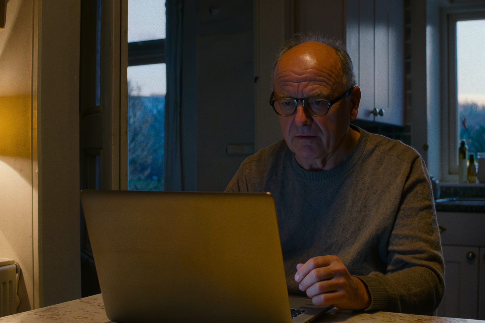
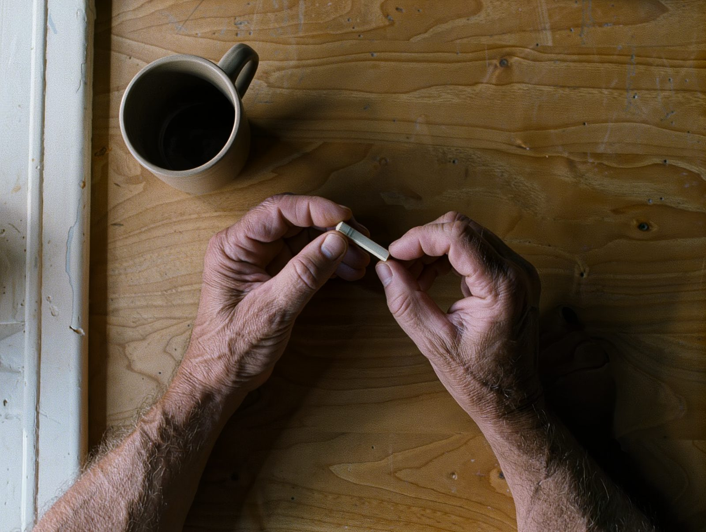

You do not know yet whether it is thyroid, iron, vitamin D or testosterone. So we test all of them.

Plate 02 · 7amA reference range describes where most men sit. It exists to identify clinical deficiency: the threshold at which you are officially recognised as ill. That is a useful line, and it is not the same line as being well.
Active B12 is the plainest case. The assay calls anything above 37.5 normal, while the NICE guideline our GP follows treats 25 to 70 as an indeterminate zone. Same number, two verdicts.

Plate 03 · the same test, laterOne result tells you where you are today. It cannot tell you which direction you are going, and we are not going to pretend otherwise.
One point on a scale, both ranges shown, in plain English. Yours to keep whether you buy anything else or not.
Same lab, same assay, same units. That is what makes two numbers comparable, and why we cannot use your old NHS bloods.
Two points make a line. The line is the thing nobody currently has, and the reason to keep your numbers in one place.

Plate 04 · five minutes, at homeThat is the normal place to start, and it is why the full panel is the default. Finger-prick at home, five minutes, freepost back.
You should not have to pay to find out whether we are worth paying. What you pay for is the record: your numbers, held over time.
Articles on what your results actually mean, what a reference range is, and why “within range” and “well” are two different questions. No email, no gate.
How to read your bloodsA demo account loaded with a sample result. Look at exactly what you get before you spend anything. We never put your data in it.
Open the demoAny result that needs a doctor goes to a GP, and earns us nothing. No result changes what we offer you or what it costs. We are not a route into a treatment we happen to sell, because we do not sell one.
UKAS accredited lab. Results in 2 to 5 working days. Plain English. No GP needed.
The axis is photography at scale. The brief names four levers for answering “flat and barren”: photography, scale, texture and motion. This direction spends everything on the first two and almost nothing on the others. The page is a sequence of full-bleed plates with type set into them, and the readout is presented the way a museum presents a specimen: framed, numbered, labelled, given room.
A full-bleed photograph under a very slow scale drift, with the headline revealed by mask over it. Imagery is the section 6 lever this direction pulls, which is why no other direction leads with a photograph. The scrim over the image is a flat single-direction wash and exists for one reason: the type does not clear 4.5:1 over the photograph without it.
Zero em dashes, code comments included. No “diagnose”, “treat” or “cure”. The conflict-free receipt stated as written. No membership sold or priced. No EFSA-claim ingredient named, no ashwagandha, no TRT implied or available. Every value, band edge and marker position is computed from 04_products/results-engine/thresholds.md with the arithmetic written out beside it.
Not pre-flighted yet. The generated photography is claim-adjacent and needs a compliance pre-flight (CA-045, open) before any of it goes near a live page.